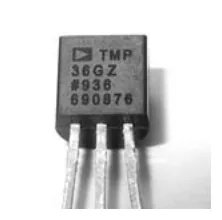
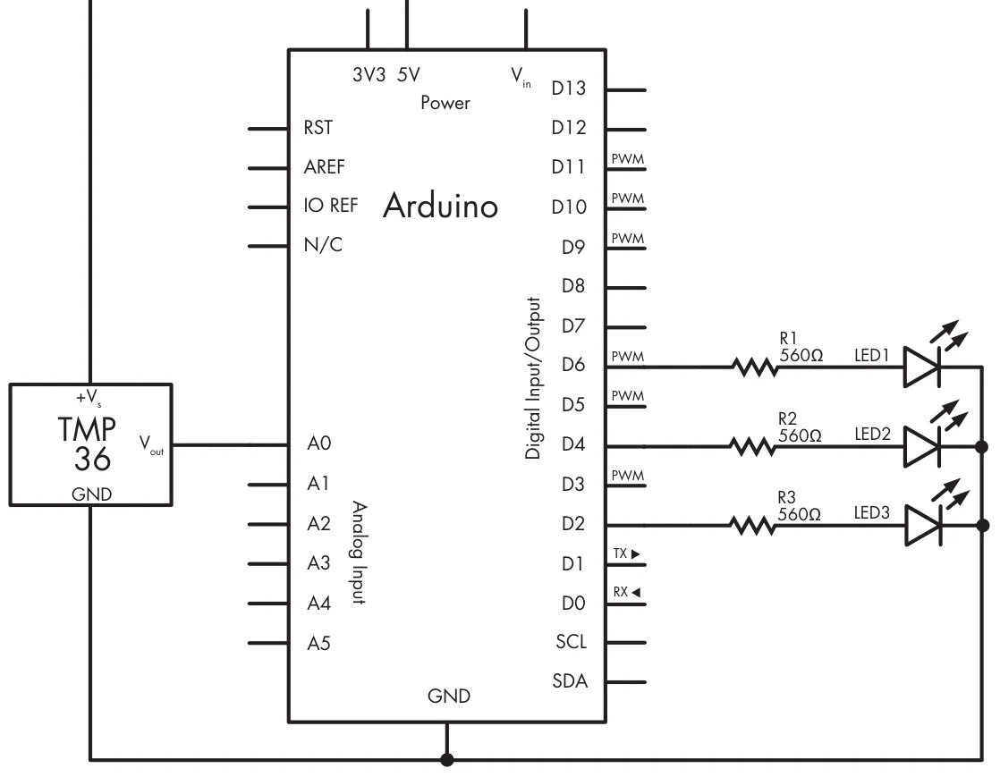
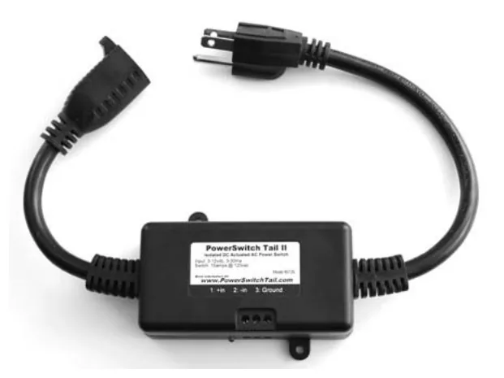

Temperature can be represented by an analog signal. We can measure temperature using the TMP36 voltage output temperature sensor made by Analog Devices (http://www.analog.com/tmp36/), shown in Figure 4-40.

Notice that the TMP36 looks just like the BC548 transistor we worked with in the relay control circuit in Chapter 3. The TMP36 outputs a voltage that is proportional to the temperature, so you can determine the current temperature using a simple conversion. For example, at 25 degrees Celsius, the output voltage is 750 mV, and each change in temperature of 1 degree results in a change of 10 mV. The TMP36 can measure temperatures between −40 and 125 degrees Celsius.
The function analogRead() will return a value between 0 and 1,023, which corresponds to a voltage between 0 and just under 5,000 mV (5 V). If we multiply the output of analogRead() by (5,000/1,024), then we will get the actual voltage returned by the sensor. Next, we subtract 500 (an offset used by the TMP36 to allow for temperatures below zero) and then divide by 10, which leaves us with the temperature in degrees Celsius. If you work in Fahrenheit, then multiply the Celsius value by 1.8 and add 32 to the result.
The Goal
In this project, we’ll use the TMP36 to create a quick-read thermometer. When the temperature falls below 20 degrees Celsius, a blue LED turns on. When the temperature is between 20 and 26 degrees, a green LED turns on, and when the temperature is above 26 degrees, a red LED turns on.
The Hardware
Here’s what you’ll need to create this project:
- Three 560 Ω resistors (R1 to R3)
- One red LED (LED1)
- One green LED (LED2)
- One blue LED (LED3)
- One TMP36 temperature sensor
- One breadboard
- Various connecting wires
- Arduino and USB cable
The Schematic
The circuit is simple. When you’re looking at the labeled side of the TMP36, the pin on the left connects to the 5 V input, the center pin is the voltage output, and the pin on the right connects to GND as shown in Figure 4-41.

The Sketch
And now for the sketch:
// Project 8 - Creating a Quick-Read Thermometer
// define the pins that the LEDs are connected to:
#define HOT 6
#define NORMAL 4
#define COLD 2
float voltage = 0;
float celsius = 0;
float hotTemp = 26;
float coldTemp = 20;
float sensor = 0;
void setup()
{
pinMode(HOT, OUTPUT);
pinMode(NORMAL, OUTPUT);
pinMode(COLD, OUTPUT);
}
void loop()
{
// read the temperature sensor and convert the result to degrees Celsius
❶ sensor = analogRead(0);
voltage = (sensor*5000)/1024; // convert raw sensor value to millivolts
voltage = voltage-500; // remove voltage offset
celsius = voltage/10; // convert millivolts to Celsius
// act on temperature range
❷ if ( celsius < coldTemp )
{
digitalWrite(COLD, HIGH);
delay(1000);
digitalWrite(COLD, LOW);
}
❸ else if ( celsius > coldTemp && celsius <= hotTemp )
{
digitalWrite(NORMAL, HIGH);
delay(1000);
digitalWrite(NORMAL, LOW);
}
else
{
// celsius is > hotTemp
digitalWrite(HOT, HIGH);
delay(1000);
digitalWrite(HOT, LOW);
}
}The sketch first reads the voltage from the TMP36 and converts it to temperature in degrees Celsius at ❶. Next, using the if-else functions at ❷ and ❸, the code compares the current temperature against the values for hot and cold and turns on the appropriate LED. The delay(1000) statements are used to prevent the lights from flashing on and off too quickly if the temperature fluctuates rapidly between two ranges.
Hacking the Sketch
Although this sketch was rather simple, you could use it as the basis for taking other sorts of readings. You might add a PowerSwitch Tail, for example, as shown in Figure 4-42.

With a PowerSwitch Tail, you can safely control an appliance that runs from the wall socket, such as a heater, lamp, or another device with a digital output from your Arduino. (For more information, visit http:// www.adafruit.com/products/268/.) For example, you could use a PowerSwitch Tail to build a temperature-controlled heater or fan, control a garage light so it runs for a time and then switches off, or remotely control outdoor Christmas lights.